資料分析
第五章：揭示不確定性與大型資料
實踐大學
2026-06-06
揭示不確定性
揭示不確定性
當資料帶有關於不確定性的資訊時——無論它源自統計模型、重抽樣程序，或分布假設——強烈建議把這份不確定性與中心估計值一起視覺化。
ggplot2 為此提供四類 geoms。適當的選擇取決於兩個準則：(1) x 軸是離散還是連續，以及 (2) 你想只顯示區間的範圍，還是同時顯示區間的範圍與中心。
| x 類型 | 顯示內容 | Geoms |
|---|---|---|
| 離散 | 僅範圍 | geom_errorbar()、geom_linerange() |
| 離散 | 範圍 + 中心 | geom_crossbar()、geom_pointrange() |
| 連續 | 僅範圍 | geom_ribbon() |
| 連續 | 範圍 + 中心 | geom_smooth(stat = "identity") |
這些 geoms 全都假設的是 y 在給定 x 之下的條件分布，並使用 ymin 與 ymax 美學來定義區間的範圍。若想改為沿 x 軸顯示區間，請套用座標翻轉（見第 15 章）。
設定範例資料
ymin 與 ymax 美學定義每個區間的下界與上界。這裡它們是用點估計 y 減去與加上標準誤 se 所構成。
範圍與中心的 geoms（離散 x）
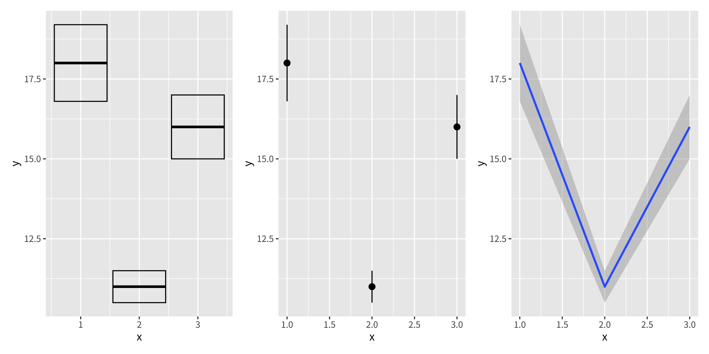
geom_crossbar()畫出一個盒子，其中間線標示中心估計值。geom_pointrange()結合一個中心點與一條橫跨區間的垂直線。geom_smooth(stat = "identity")呈現一條陰影帶加上一條線，直接採用所提供的ymin／ymax值，不做任何統計轉換。
僅範圍的 geoms
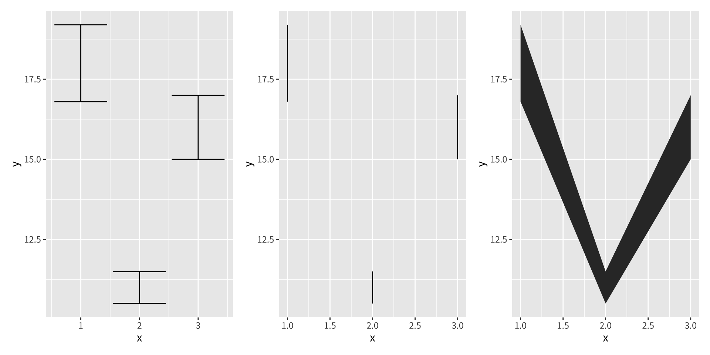
geom_errorbar()呈現經典的 T 形誤差棒，在ymin與ymax處有橫帽。geom_linerange()畫出沒有橫帽的單純垂直線。geom_ribbon()填滿ymin與ymax之間的區域，因此很適合連續的 x 軸。
關於計算的提醒
ggplot2 不會自動計算標準誤。由於標準誤的公式會依統計模型或假設而異，這項計算必須由分析者在把資料傳給 ggplot2 之前完成。關於計算與運用以模型為基礎的不確定性，請參考 R for Data Science（https://r4ds.had.co.nz）。
加權資料
加權資料
當輸入資料是由彙總後的摘要所組成時——其中每一列代表多筆底層觀測值——把每一列重要性不相等這件事納入考量就很重要。本節用內建的 midwest 資料集說明這個概念，它包含取自 2000 年美國人口普查、中西部各州郡層級的統計。
這份資料集主要由百分比（例如白人百分比、低於貧窮線百分比、擁有大學學位百分比）以及描述性資訊（例如總面積與總人口）所組成。
該以什麼加權？
存在三個自然的選擇：
- 不加權——每個郡都被視為同等重要；圖顯示的是郡的分布。
- 總人口——每個郡依其所包含的人數加權；圖反映的是個人的分布。
- 面積——每個郡依其地理大小加權；當空間覆蓋比人口更重要時很有用。
加權變數的選擇改變了所提問的問題，並可能大幅改變從視覺化中得出的結論。
用 size 美學加權
對於點與線這類簡單的 geoms，size 美學提供了加權變數的直接視覺編碼：
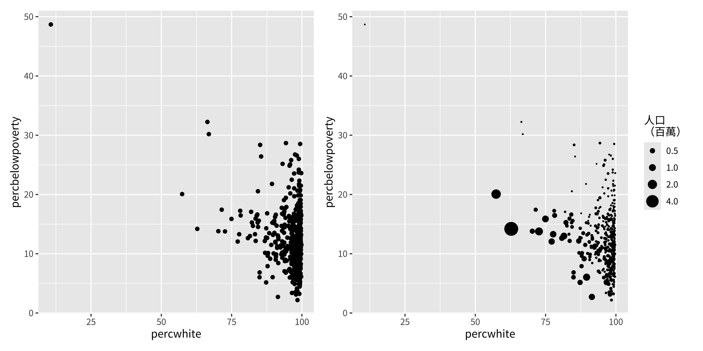
右圖揭示，人口眾多的郡傾向聚集在圖中與人口稀少的郡不同的區域——這個型態在未加權的版本中是看不見的。
為統計轉換加權
對於牽涉內部統計計算的 geoms（平滑曲線、直方圖、密度圖、盒鬚圖、分位數迴歸），權重透過 weight 美學提供。這個美學不會被視覺化呈現、也不產生圖例，但它會修改底層的計算。
下面的例子顯示，把線性平滑曲線依人口加權，如何改變白人百分比與低於貧窮線百分比之間的估計關係：
p1 <- ggplot(midwest, aes(percwhite, percbelowpoverty)) +
geom_point() +
geom_smooth(method = lm, linewidth = 1)
p2 <- ggplot(midwest, aes(percwhite, percbelowpoverty)) +
geom_point(aes(size = poptotal / 1e6)) +
geom_smooth(aes(weight = poptotal), method = lm, linewidth = 1) +
scale_size_area(guide = "none")
p1 | p2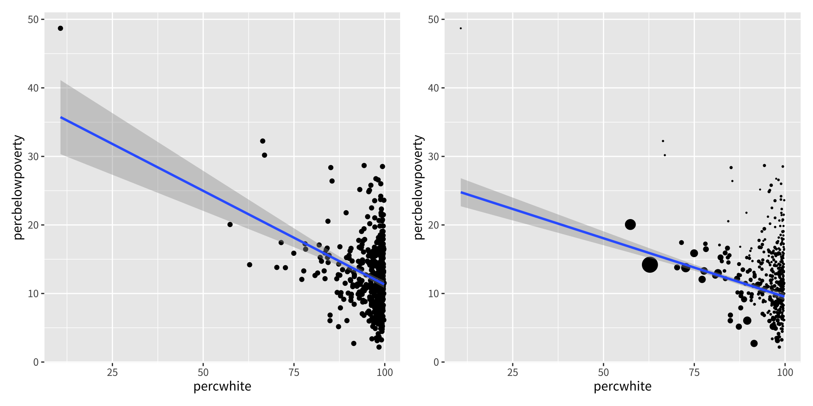
為直方圖加權
把 weight 美學套用到 geom_histogram()，會把它的詮釋從郡的數目轉變為人的數目。分布的形狀——以及據此得出的結論——可能大幅改變：
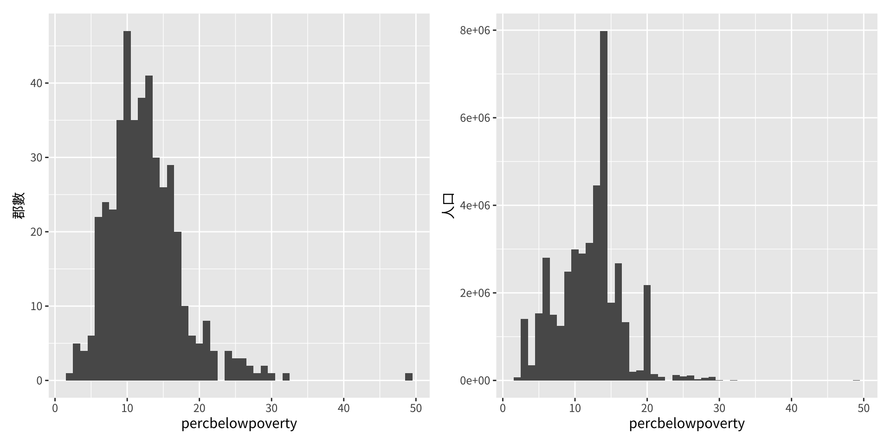
左邊的直方圖顯示，大多數郡的貧窮率都很低。右邊的直方圖揭示，大多數人也都住在這類郡，但當人口規模被納入考量時，分布的形狀明顯改變。
鑽石資料
鑽石資料
本章其餘各節都取材自 diamonds 資料集，它與 ggplot2 一起附帶。它包含約 54,000 顆鑽石的價格與品質資訊，是練習適用於大型資料集之技巧的有用試驗場。
# A tibble: 6 × 10
carat cut color clarity depth table price x y z
<dbl> <ord> <ord> <ord> <dbl> <dbl> <int> <dbl> <dbl> <dbl>
1 0.23 Ideal E SI2 61.5 55 326 3.95 3.98 2.43
2 0.21 Premium E SI1 59.8 61 326 3.89 3.84 2.31
3 0.23 Good E VS1 56.9 65 327 4.05 4.07 2.31
4 0.29 Premium I VS2 62.4 58 334 4.2 4.23 2.63
5 0.31 Good J SI2 63.3 58 335 4.34 4.35 2.75
6 0.24 Very Good J VVS2 62.8 57 336 3.94 3.96 2.48資料集中的變數
這份資料集記錄了鑽石品質的四 C：
carat——鑽石的重量cut——切工品質（Fair、Good、Very Good、Premium、Ideal）color——鑽石顏色，從 D（最佳）到 J（最差）clarity——內部內含物的量度（I1 到 IF）
也包含五項物理量測：
x、y、z——長、寬、深，單位為毫米depth——總深度百分比：z / mean(x, y) × 100table——頂面相對於最寬處的寬度
這份資料集尚未經過嚴謹清理，因此提供了同時觀察真實型態與資料品質瑕疵的機會。
顯示分布
顯示分布
把分布視覺化的適當 geom，取決於數個因素：分布的維度、變數是連續或離散，以及興趣在於條件分布還是邊際分布。
直方圖：geom_histogram()
對於單一連續變數，直方圖是最基本的呈現方式。關鍵的調校參數是 binwidth：
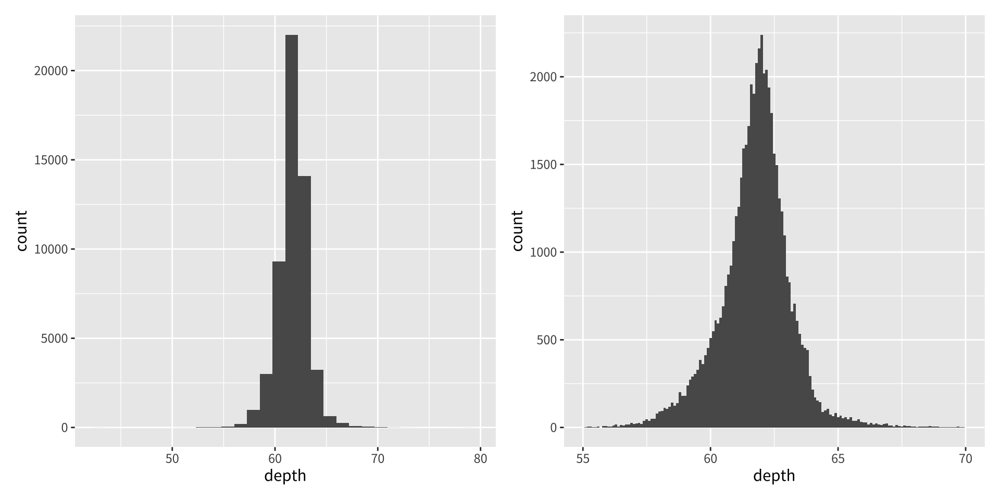
選擇能提供資訊的 binwidth 至關重要——預設的 30 組很少能揭示最有趣的結構。用 xlim() 加寬 x 軸範圍、並縮小 binwidth，能揭露出原本會被遮蔽的細緻特徵。
出版時，務必在圖說中註明所選的 binwidth。
跨群組比較分布
當跨某個類別變數比較分布時，有三種策略可用：
- 小倍數圖——
facet_wrap(~ var)——為每一組顯示一張完整的直方圖，讓形狀容易比較。 - 次數多邊形——
geom_freqpoly()——在單一面板上，為每一組疊加以計數為基礎的曲線。 - 條件密度——
geom_histogram(position = "fill")——把分組堆疊，並把每個 x 位置縮放到共同高度，顯示每一點上的相對組成。
p1 <- ggplot(diamonds, aes(depth)) +
geom_freqpoly(aes(colour = cut), binwidth = 0.1, na.rm = TRUE) +
xlim(58, 68) +
theme(legend.position = "none")
p2 <- ggplot(diamonds, aes(depth)) +
geom_histogram(aes(fill = cut), binwidth = 0.1, position = "fill",
na.rm = TRUE) +
xlim(58, 68) +
theme(legend.position = "none")
p1 | p2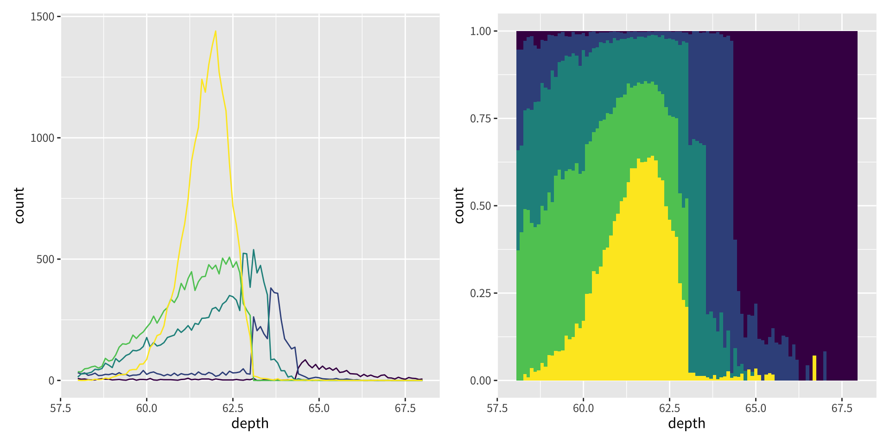
底層的統計量：stat = "bin"
geom_histogram() 與 geom_freqpoly() 都使用相同的底層統計轉換 stat_bin()。這個 stat 計算兩個輸出變數：
count——每一組中的觀測值數目（預設映射到 y，因為它最能直接被詮釋）。density——計數除以總計數，再除以組距。把 density 映射到 y，會使每根長條下的面積加總為一，這有助於跨不同大小的群組比較形狀。
核密度估計：geom_density()
以分組為基礎之呈現方式的替代選擇是核密度估計（kernel density estimate, KDE）。geom_density() 在每個資料點放置一個高斯核，並把所得曲線加總成底層分布的平滑估計。
當真實分布已知或被假設為平滑、連續且無界時，KDE 最為適當。adjust 引數縮放預設的頻寬（值 > 1 產生較平滑的估計；值 < 1 產生較粗糙的估計）：
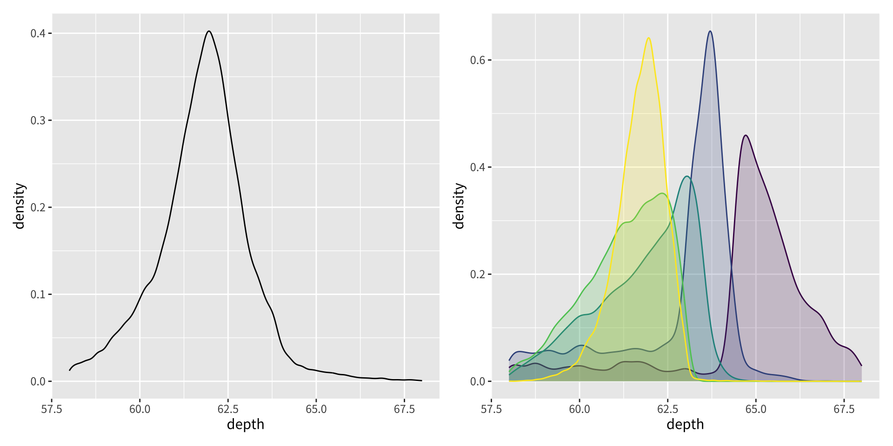
請注意，每個 KDE 都經過標準化，使其總面積等於一。其後果是，關於各群組相對大小的資訊會喪失。
精簡的多群組摘要
當目標是同時比較許多分布時，必須以細節換取精簡。有三個 geoms 特別有用：
geom_boxplot()——盒鬚圖用五個統計量（最小值、Q1、中位數、Q3、最大值）摘要一個分布，並標記出可能的離群值。它占用極少空間，且能良好地擴展到許多群組。
對於連續的 x 變數，把 group 美學與 cut_width() 結合，可把資料劃分成組：
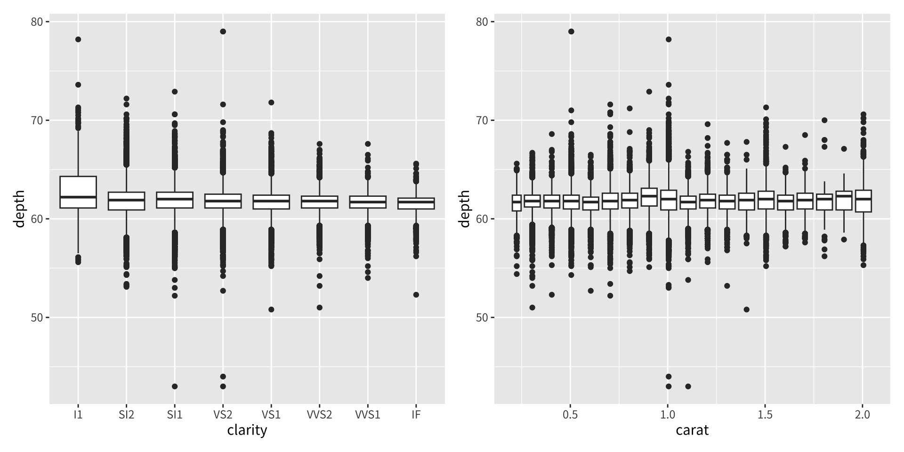
geom_violin()——小提琴圖是一個鏡像、平滑的密度估計，呈現在與盒鬚圖相同的空間範圍內。它比盒鬚圖保留更多的分布資訊，同時仍維持精簡：
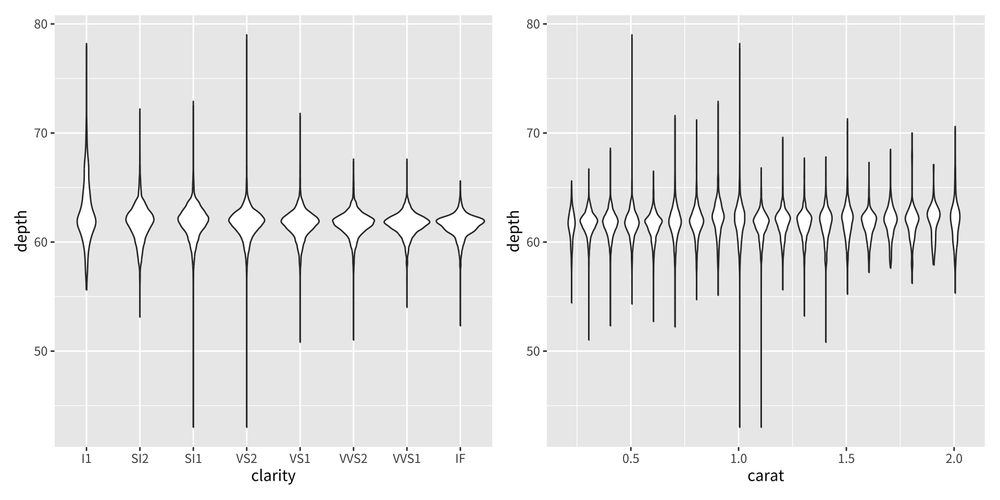
geom_dotplot()——為每一筆個別觀測值放置一個點，並把它們堆疊起來以避免重疊。它同時保留原始資料並揭示分布形狀。它最適合用於重疊繪製不成問題的較小資料集。
練習
哪個
binwidth能揭示carat分布中最有趣的結構？畫出
price的直方圖。你觀察到哪些不尋常或醒目的型態？price的分布如何隨clarity的各個水準而變化？在單一張圖中，為
depth疊加一個次數多邊形與一個密度估計。你必須把哪個計算出的變數映射到y，才能讓這兩種呈現共用相同的尺度？（你可以修改geom_freqpoly()或geom_density()。）
處理重疊繪製
處理重疊繪製
散佈圖是探討兩個連續變數之間關係最有效的工具之一。然而，對於大型資料集，許多點會被呈現在相同或近乎相同的位置，這個問題稱為重疊繪製（overplotting）。在嚴重的情況下，只看得到資料雲的邊界，任何對內部的詮釋都不可靠。
緩解重疊繪製有數種策略。最適當的方法取決於資料集的大小與重疊的程度。
策略 1：修改點的外觀
對於中度的重疊繪製，調整點的視覺屬性就可能足夠。下面的程式碼在取自二元常態分布的 2,000 個點樣本上，比較三種選項：
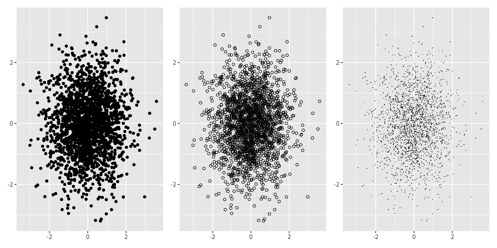
空心字符（shape = 1）與像素大小的點（shape = "."）讓視覺能在某種程度上穿透實心填色圓會遮蔽的密集區域。
策略 2：Alpha 混合（透明度）
alpha 設定每個點的透明度。當指定為分數 1/n 時，只有當 n 個點彼此堆疊時，表面才會達到完全不透明：
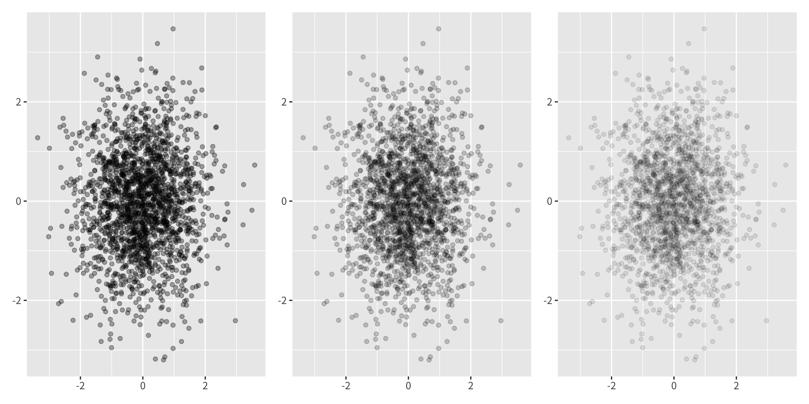
小於約 1/500 的 alpha 值會被向下取整為零，產生完全透明（不可見）的點。Alpha 混合與空心字符結合時最為有效。
策略 3：抖動
當資料帶有某種程度的離散性時，geom_jitter() 為每個點的位置加上一個小的隨機偏移，減少完全的重疊。預設的抖動量為資料解析度的 40%；這可以用 width 與 height 引數調整。
抖動在底層數值確實相異、但被四捨五入到共同數值時最有意義。它不應套用於位置精確度重要的真正連續資料。
策略 4：二維分箱
重疊繪製可以被重新框定為一個二維密度估計問題。與其繪製個別的點，不如把繪圖區域劃分成箱，並顯示每個箱內的計數。
方形箱——geom_bin2d()：
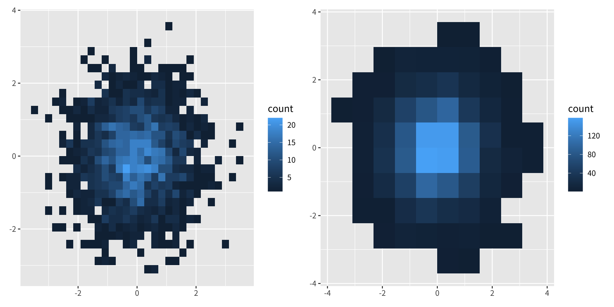
六邊形箱——geom_hex()：
Carr 等人（1987）的研究顯示，相較於方形箱，六邊形箱能減少視覺瑕疵，因為六邊形鑲嵌更為各向同性。geom_hex() 需要 hexbin 套件：
geom_bin2d() 與 geom_hex() 都接受 bins（每軸的箱數）與 binwidth（每個箱的實際寬度）引數來控制粒度。
策略 5：二維密度估計
stat_density2d() 估計二元密度，並可與任何能顯示第三維的 geom 結合（見第 5.7 節）。這個方法產生平滑的等高線，但比分箱涉及更多的計算開銷。
策略 6：加上摘要圖層
在散佈圖上方加上 geom_smooth()，會畫出一條平滑的條件平均，引導視線朝向底層的趨勢，而不移除原始資料。其他摘要 geoms（見第 5.6 節）也能扮演類似的角色。
統計摘要
統計摘要
geom_histogram() 與 geom_bin2d() 是熟悉的 geom（geom_bar()／geom_raster()）與統計轉換（stat_bin()／stat_bin2d()）的特化組合。這些 stats 把觀測值彙總到箱中，並回傳每個箱的計數。如果想要的不是計數、而是其他摘要，該怎麼辦？
stat_summary_bin() 與 stat_summary_2d() 把這個概念擴展到任意的摘要函式，讓我們能在每個箱內顯示平均、中位數，或任何使用者自訂的統計量。
用 stat_summary_bin 做一維摘要
下面的第一張圖依顏色類別計數鑽石（等同於預設的 geom_bar() 行為）。第二張圖把計數替換成每個顏色組的平均價格，示範 stat = "summary_bin" 與 fun = mean 如何協同運作：
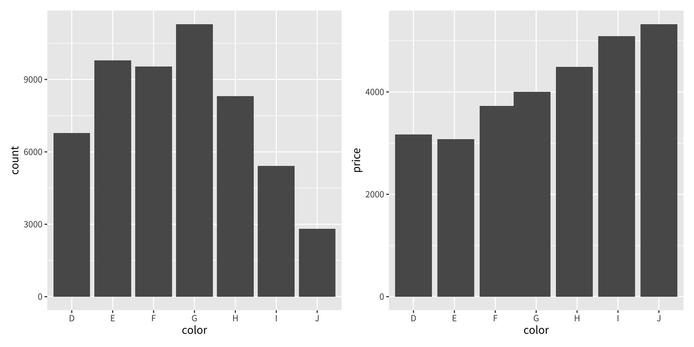
用 stat_summary_2d 做二維摘要
類比的工具也存在於二維分箱。下面的左圖計數落在每個 (table, depth) 箱內的觀測值。右圖以平均價格填滿每個箱，揭露鑽石價值如何與這兩個物理維度聯合相關：
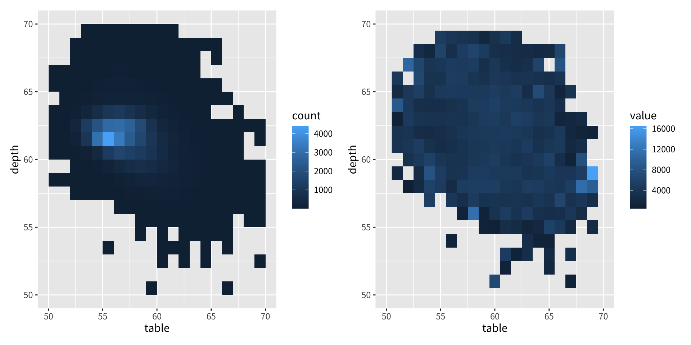
關鍵引數
fun——要在每個箱內套用的摘要函式（例如mean、median、sd，或任何自訂函式）。stat_summary_bin()也能產生ymin與ymax美學，使其適合在中心估計值旁顯示離散程度的量度。- 箱的大小用
bins或binwidth控制，與標準直方圖相同。
完整文件請參閱 ?stat_summary_bin 與 ?stat_summary_2d。對於更複雜的建模工作流程，在資料整理步驟中預先計算摘要（見 R for Data Science）能提供更大的彈性。
曲面
曲面
前面各節涵蓋了一對一的 geoms（每列一個幾何物件）與統計 geoms（對各列做彙總）。第三種情境出現在目標是表示一個三維曲面時——一個定義在 (x, y) 座標格網上的值 z。
ggplot2 不會產生真正的 3D 圖，但提供曲面的數種 2D 表示。這些 geoms 主要差別在於第三維 z 如何被編碼：
等高線圖——geom_contour()
geom_contour() 畫出連接相等 z 值之點的等值線。faithfuld 資料集（內建於 ggplot2）包含老忠實間歇泉資料的二元密度估計：
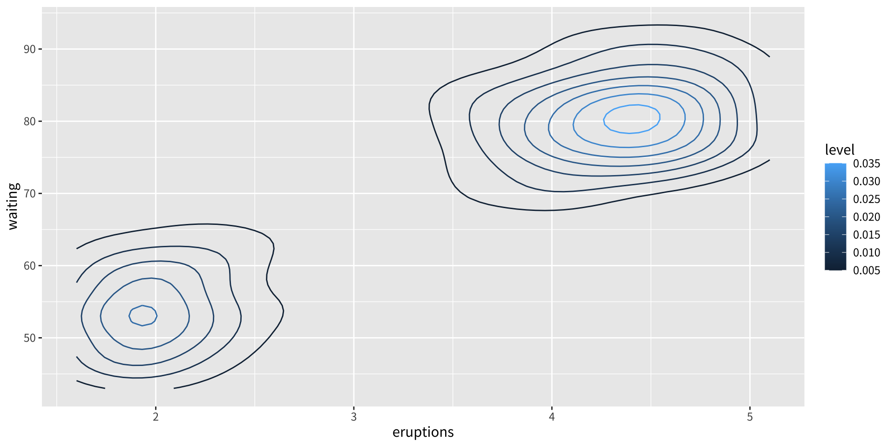
after_stat(level) 變數指的是由 stat 內部計算出的等高線水準——它不存在於原始的 faithfuld 資料中。這是已被棄用的 ..level.. 表示法的現代替代。把它映射到 colour，能讓等高線本身傳達密度的大小。
熱圖——geom_raster()
當一個以格網為基礎的曲面要以顏色編碼的方塊地圖呈現時，geom_raster() 提供有效率的呈現。它針對所有方塊共用相同尺寸的均勻格網做了最佳化：
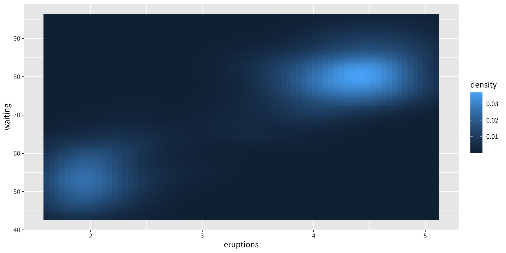
顏色編碼每個格網點的密度值，給出曲面的熱圖視圖。請使用循序或發散的顏色尺度，使大小的排序在知覺上易於辨認。
泡泡圖——搭配 size 的 geom_point()
對於較稀疏的格網，把曲面值編碼為點的大小，能保留位置布局，同時避免完整光柵圖的視覺雜亂。請注意，當觀測密度高時泡泡圖會變得難以判讀：
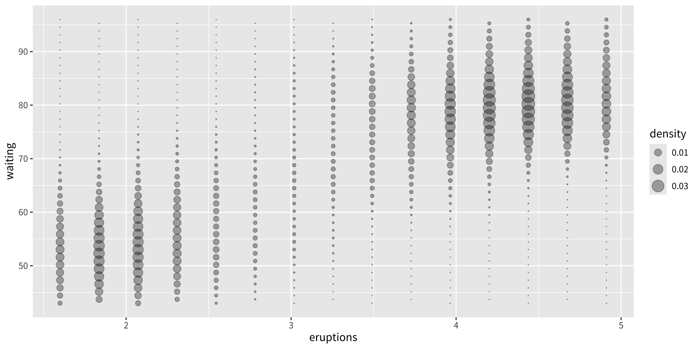
scale_size_area() 確保每個泡泡的面積與底層的值成正比，這在知覺上比讓半徑成正比更為準確。
在曲面 geoms 之間做選擇
| Geom | 透過什麼編碼 z | 最適合的情況 |
|---|---|---|
geom_contour() |
線的顏色 | 等值線與方向性梯度 |
geom_raster() |
填色 | 密集、均勻的格網 |
geom_point() |
點的大小 | 稀疏格網；少於約 200 個點 |
至於互動式 3D 曲面（真正的透視視圖、可旋轉的圖），rgl 套件（http://rgl.neoscientists.org）提供了超出 ggplot2 範疇的必要工具。
版權聲明
版權聲明。 本教材改編自 ggplot2: Elegant Graphics for Data Analysis (3e)。所有權利均由原作者與出版者保留。
僅供非商業用途。 本教材嚴格限定用於教育目的，不得用於商業獲利。
適當標註出處。 任何對本教材的重製、散布或使用，都必須適當標註原始出處

ggplot2: Elegant Graphics for Data Analysis